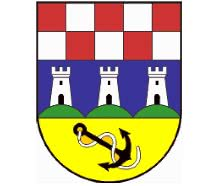

DAVNO, davno prije
a i sada…
BAKAR SE NALAZI
na brežuljku sjeverozapadnog djela istoimenog zaljeva.
Okružen je brdima koja dosežu do 300m nadmorske visine.
POVIJESNA JEZGRA
(proglašena spomenikom kulture 1968), podijeljena je na dva dijela: stariji, gornji, tzv. „Grad“ u kojem se razvilo naselje opasano gradskim zidinama i donji dio koji se sastoji od predjela "Zagrad" i "Primorje".
POSTOJE PRETPOSTAVKE
kako je naselje iz kojega je nastao današnji grad, nastalo naseljavanjem Židova iz Jeruzalema koji su u 1.st. pobjegli od razaranja rimskog cara Tita ali i one koje govore o postojanju naselja koje su osnovali Iliri još davno prije naše ere asimilirajući prvotne stanovnike Kelte.

NAJVJEROJATNIJE JE
da se na području današnjeg grada nalazilo naselje imena Valcera koje su naseljavali Rimljani.
U 13.ST. SPOMINJU SE
imena Bukar i Bkri te latinski naziv Buccari. Ime grada se po prvi puta susreće u Vinodolskom zakoniku 1288 g.
POSTOJE PRETPOSTAVKE
kako je ime nastalo zbog blizine obližnjeg rudnika bakarske rude ili od riječi bukara koja označava drveni vrč oblikom sličan Bakarskom zaljevu. Grad se najviše razvija između 1225 i 1774 godine.
DO TADA POSTOJI
kao samostalna općina (communitas) s vlastitom upravom (koja se zasnivala na propovijedima svećenika glagoljaša), te crkvenom i vojnom organizacijom.